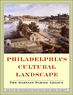

<body bgcolor="#FFFFFF" text="#000000" link="#0000FF" vlink="#CC0000" alink="#CC0000"><center><hr width="350" size="1" align="center" noshade>A vividly illustrated history of a Philadelphia family dynasty of artists<hr width="350" size="1" align="center" noshade><p><a href="https://cdcshoppingcart.uchicago.edu/Cart/ChicagoBook.aspx?ISBN=9781566397919&&PRESS=temple" target="_top">Buy this book!</a> | <a href="https://cdcshoppingcart.uchicago.edu/Cart/Cart.aspx?PRESS=temple" target="_top">View Cart</a> | <a href="https://cdcshoppingcart.uchicago.edu/Cart/Cart.aspx?PRESS=temple" target="_top">Check Out</a></p><p></p></center><!--none//--><h1>Philadelphia's Cultural Landscape</h1>
<H2>The Sartain Family Legacy</H2>
<H2>A Barra Foundation Book</H2>
<h3>edited by Katharine Martinez and Page Talbott</h3>
<P>cloth 1-56639-791-X $69.50, Nov 00, <FONT COLOR=#990033>Out of Stock Unavailable</FONT>
<BR> 211 pp
8.5x11
2&nbsp;map(s) 1&nbsp;figure 122&nbsp;duotones 8&nbsp;color&nbsp;illustrations
</P><h3 align="center"><P><font color="#996633">Philadelphia Book Clinic Certificate of Award,
2001</font></P>
<P><font color="#996633">The Ewell L. Newman Book Award from the American Historical Print Collectors Society for the outstanding publication enhancing appreciation of American prints before 1900,
2001</font></P>
</H3>
<BLOCKQUOTE><I>"Exploring the connection of past, present, and future can remind us of our own interconnections with the community around us.... I am amazed at the talent that surrounds me every day and thankful for the strength and vision of my predecessors in the Sartain family."</I>
<br>&#151From the Foreword by <b>Happy Craven Fernandez</b>, President, Moore College of Art and Design<I></I></BLOCKQUOTE>
<p>With essays by Elizabeth Johns, Cheryl Leibold, Katharine Martinez, Elizabeth Milroy, Sue Himelick Nutty, Patricia Likos Ricci, Ethan Robey, Kirsten Swinth, Page Talbott, Tara Leigh Tappert, Mark Thistlethwaite, Andrew L. Thomas, Nina di Angeli Walls, Helena E. Wright, Sylvia Yount
<p>In their day, from 1830 to 1930, members of the Sartain family of Philadelphia were widely
known as printmakers, painters, art administrators, and educators. Since then, the accomplishments of three generations of Sartains&#151John, children Samuel, Henry, Emily, and William, and grand-daughter Harriet&#151have become obscure. This wide-ranging collection of essays aims to rectify that situation.
<p>The patriarch of the family&#151John Sartain&#151came to Philadelphia from England in 1830 to make a name for himself as a mezzotint engraver. Mezzotint was a sophisticated means of popularizing the work of well-known painters, and as an engraver trained in London, John was in great demand. He became influential, not just as a pictorial engraver, but as a painter, publisher, and administrator. He even designed monuments and furniture. And he passed on his skills and learning to his children.
<p>One of John's daughters and three of his sons went on to become equally celebrated. Emily, with her friend Mary Cassatt, became a well-known painter and principal of the Philadelphia School of Design for Women, precursor of Moore College of Art and Design. As an art educator, she became a leader in the women's art movement and traveled widely as a speaker and delegate. John's sons Samuel and Henry worked closely with their father as engravers and printmakers and were early photography enthusiasts. Son William moved to New York, where he became an associate of the National Academy of Design, a founder of the Society of American Artists, and president of the Art Club of New York. Henry's daughter Harriet followed her aunt Emily as head of the School of Design, where she advocated broad popular access to art appreciation and training.
<p>The Sartains were important not just for who they were but for whom they knew and influenced. They were in the vanguard of the movement to democratize art and art education. Among their acquaintances were painter Thomas Eakins, Emily's one-time beau; poet and short-story writer Edgar Allen Poe; industrialist and art collector Joseph Harrison, Jr.; and Harriet Judd Sartain, a successful homeopathic physician who financed her niece Emily's professional training. Lavishly illustrated with 113 duotones and 8 color plates, <I>Philadelphia's Cultural Landscape</I> is a fascinating look at a century in which the production and promulgation of art was seen as everybody's business, and at a family that epitomized that spirit.
<BR>&nbsp;<h2>Excerpt</h2><P>Excerpt available at <a href="http://www.temple.edu/tempress">www.temple.edu/tempress</a></p>
<BR>&nbsp;<h2>Reviews</h2>
<p><i>"Behind the rise of every great city are great families whose vision, passion, and achievements in the arts expanded the cultural landscape. The Philadelphia Sartains were just such a family. Until the publication of this book, their saga, which is central to the maturity of art in America, was known only to a privileged few. Now shared, it provides scaffolding for a truer understanding of Philadelphia between the time it was called the Athens of America and the time it earned the title of Workshop of the World."</i>
<br>&#151<b>Kenneth Finkel</b>, former Curator of Prints at the Library Company of Philadelphia and author of several books on Philadelphia culture and history
<p><i>"This volume of wide-ranging essays is thoughtfully conceived, informative, and quite often fun. The authors explore a fast-changing 19th century art world: the market place, graphic reproduction, education, fairs, parks, patronage, gender politics, and shifting tastes. Fascinating lives and new discoveries reward the reader in every chapter."</i>
<br>&#151<b>Wendy Wick Reaves</b>, Curator of Prints and Drawings, The National Portrait Gallery, Smithsonian Institution, author of <I>Celebrity Caricature in America</I>
<p><i>"This highly unified collection of illustrated essays, organized chronologically and thematically, reclaims the history of a family of artists and tastemakers. The authors put the Sartain family in context as they explore functions of the visual arts in 19th and early 20th century Philadelphia. A model for studies of artistic families in other American cities, this book should be read by art historians, art educators, local historians, Americanists, and many others."</i>
<br>&#151<b>Mary Ann Stankiewicz</b>, Associate Professor, Art Education, The Pennsylvania State University
<p><I>"This is a Philadelphia story, fascinating reading that sheds light on art history, art criticism, and art education in America while bringing to life a family with vision and passion who, like the Peales, expanded the cultural landscape."</I>
<br>&#151<b><I>Maine Antique Digest</I></b>
<p><I>"...the Sartains of Philadelphia and their accomplishments are recounted in a fascinating new book, </I>Philadelphia's Cultural Landscape<I>."</I>
<br>&#151<b><I>Antiques and the Arts Weekly</I></b>
<p><i>"[A] fascinating look at a century in which the production and promulgation of art was seen as everybody's business, and at a family that represented that spirit."</i>
<br>&#151<b><i>Pennsylvania Heritage</i></b>
<BR>&nbsp;<h2>Contents</h2><P>
<p>List of Illustrations
<br>Foreword by Happy Craven Fernandez
<br>Preface and Acknowledgments
<br>Sartain Family Tree
<br>1. A Portrait of the Sartain Family and Their Home &#150 Katharine Martinez
<br>2. Prints in the Sartains' Circle &#150 Helena E. Wright
<br>3. John Sartain and Peter F. Rothermel &#150 Mark Thistlethwaite
<br>4. John Sartain and Joseph Harrison, Jr. &#150 Sue Himelick Nutty
<br>5. Edward Dalton Marchant's <I>Abraham Lincoln</I> &#150 Andrew L. Thomas
<br>6. Assembling Fairmount Park &#150 Elizabeth Milroy
<br>7. John Sartain and the Contest of Taste at the Centennial &#150 Ethan Robey
<br>8. William Sartain and Cecilia Beaux: The Influences of a Teacher &#150 Tara Leigh Tappert
<br>9. The Autobiographical Scrapbooks of William Sartain &#150 Cheryl Leibold
<br>10. "<I>Bella, Cara Emilia</I>": The Italiante Romance of Emily Sartain and Thomas Eakins &#150 Patricia Likos Ricci
<br>11. Emily Sartain and Harriet Judd Sartain, M.D.: Creating a Community of Women Professionals &#150 Kirsten Swinth
<br>12. A "New Century" for Women: Philadelphia's Centennial Exhibition and Domestic Reform &#150 Sylvia Yount
<br>13. The Sartain Family and the Philadelphia School of Design for Women &#150 Page Talbott
<br>14. Harriet Sartain and Democracy in Art Education, 1900-1930 &#150 Nina de Angeli Walls
<br>15. Thoughts on the Historiography of Art in Nineteenth-Century Philadelphia &#150 Elizabeth Johns
<br>Contributors
<br>Index
</P><BR>&nbsp;<H2>About the Author(s)</H2>
<table><tr><td valign="top"><img src="/tempress/authors/1552_au1.gif" height="90" width="75"></td><td width="100%" valign="middle"><p><B>Katharine Martinez</B> is the Herman and Joan Suit Librarian of the Fine Arts Library of Harvard College Library, Harvard University.</P></td></tr></table><table><tr><td valign="top"><img src="/tempress/authors/1552_au2.gif" height="90" width="75"></td><td width="100%" valign="middle"><p><b>Page Talbott</b> is an independent museum curator and consultant, specializing in American decorative and fine arts.</P></td></tr></table>
<P>Contributors: Elizabeth Johns, Cheryl Leibold, Katharine Martinez, Elizabeth Milroy, Sue Himelick Nutty, Patricia Likos Ricci, Ethan Robey, Kirsten Swinth, Page Talbott.</P>
<BR><H2>Subject Categories</H2>
<p><A HREF="/tempress/philly.html" TARGET="_top">Philadelphia Region</a>
<BR><A HREF="/tempress/art.html" TARGET="_top">Art and Photography</a>
</p>
<p align="center"><a href="https://cdcshoppingcart.uchicago.edu/Cart/ChicagoBook.aspx?ISBN=9781566397919&&PRESS=temple" target="_top">Buy this book!</a> | <a href="https://cdcshoppingcart.uchicago.edu/Cart/Cart.aspx?PRESS=temple" target="_top">View Cart</a> | <a href="https://cdcshoppingcart.uchicago.edu/Cart/Cart.aspx?PRESS=temple" target="_top">Check Out</a></p><p><font face="Arial" size="1"><a href="copyright.html" onMouseOver="window.status='Web Copyright Policy';return true;" onMouseOut="window.status=''" title="Web Copyright Policy">&copy;</a> 2015 <a href="http://www.temple.edu" target="new" onMouseOver="window.status='Link to Temple University home page';return true;" onMouseOut="window.status=''" title="Link to Temple University home page">Temple University</a>. All Rights Reserved. http://www.temple.edu/tempress/titles/1552_reg.html</font></p>